Randomization: Precision and Power
Revisiting the NSW Study
Our Last Analysis

- National Supported Work was a 1970s job training program for men who had a hard time holding jobs.
- men coming out of prison
- men recovering from addiction
- It was run as a randomized experiment.
- m = 445 men, m_1 = 185 in job training; m_0 = 260 in control.
- The last time we talked about this:
we compared the people who got treatment to a national benchmark. - We compared…
- the mean income of the treated participants
- 75% of their peers’ mean income
- To ask that, we had to decide who their peers are.
Their Peers?
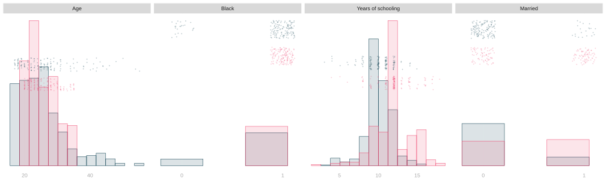
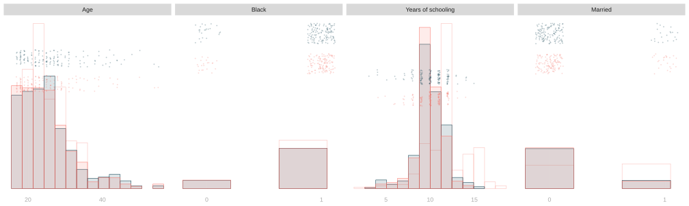
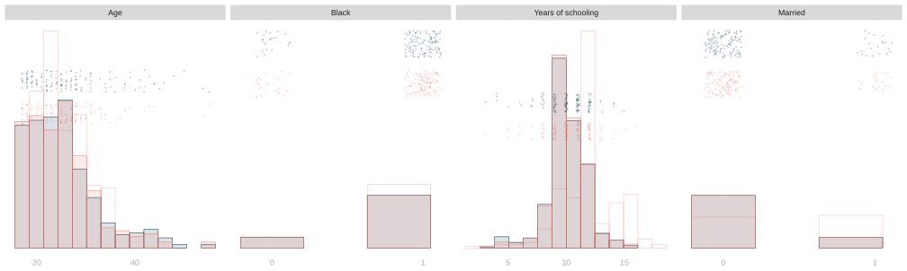
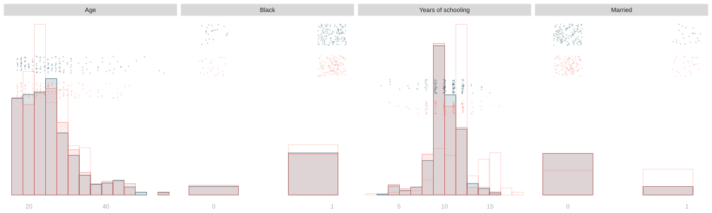
- We picked a peer group from the Current Population Survey to match on some attributes
- age, race, prior earnings, years of schooling
- You can’t match on everything or there’d be nobody left. So some stuff didn’t match.
- e.g. Marriage. 16.9% of the NSW population is married against 51.4% of the CPS peers.
- And this matters. Family structure is pretty strongly related to income.
- Some things we had to match pretty coarsely, e.g. years of schooling. That matters too.
- No matter how hard you try, there are always going to be some attributes that don’t match.
- A reference group matches in the ways you make it match. And your options are limited.
- When you match on more attributes, your reference group shrinks.
- Even in a national survey, you run out of people.
- We’ve established that you can’t get a reference group that matches.
- Experiments don’t give you that either. There aren’t enough people to match.
- Randomize the NSW participants and compare a random control group to the whole NSW population.
- The differences aren’t much better than what we had with our reference group.
- What it does tell you is that these differences are not systematic. They’re a matter of a coin flip.
- That doesn’t mean you get a perfect comparison.
- But it is enough for an unbiased estimate of the average treatment effect.
- And one that lets you quantify the uncertainty.
- So you can report a confidence interval. A valid one. You get 95% coverage.
- Thankfully, that’s what National Supported Work was. It was an experiment. We just didn’t analyze it like that.
- They did the right thing.
- We threw away their control group because we weren’t ready to work with it.
They Did It Right
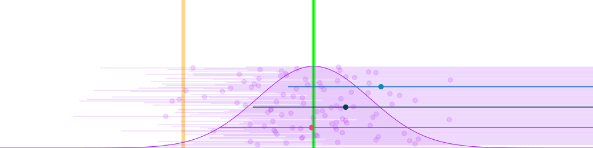

We’re taking the orange line, 75% of their peers’ mean income, and replacing it with the red line, the control group’s mean income. It’s just a different reference point.
But it’s not just a different reference point. It’s a random point. It has its own distribution.
We’ve gone from comparing to some benchmark to comparing to the mean of a different group from the same experiment.
- Those things are random. Those things are related.
So just going on and acting like we can do power the way we did before, as if this were just some line, doesn’t work.
- That’s what today is about.
To an Extent
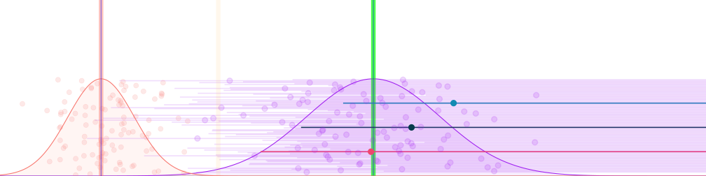
- They did everything right except the number of people in their study.
- So they did it right. Sort of. To an extent. And the limit of that extent is power.
- It’s a letdown of a story: the study was too small, and nobody knows whether training worked.
- You ask for funding to find out if a program works, and you don’t find out. Asking again is hard.
- Today is about why power calculations matter. That is how you don’t throw money in the toilet.
Review: Randomization
Where Thursday Left Us
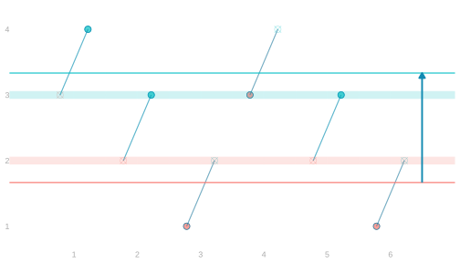
- One dot per assignment, \binom{6}{3} = 20 of them.
- \binom{n}{s} is the number of binary sequences of length n that sum to s.
- An assignment W_1 \ldots W_6 is one with s=3 ones. The ones pick out who’s treated.
- Written as a sum over everyone, a group mean has expectation equal to the population mean, because each random indicator averages to m_w/m. \begin{aligned} \hat\mu(w) &=\frac1{m_w}\sum_{j:W_j=w}y_j(W_j) =\frac1{m_w}\sum_{j=1}^m y_j(W_j)\textcolor{#7b2cbf}{1_{=w}(W_j)} =\frac1{m_w}\sum_{j=1}^m y_j(w)\textcolor{#7b2cbf}{1_{=w}(W_j)}\\ \mathbb E\{\hat\mu(w)\} &=\frac1{m_w}\sum_{j=1}^m y_j(w)\mathbb E\{\textcolor{#7b2cbf}{1_{=w}(W_j)}\} =\frac1{m_w}\sum_{j=1}^m y_j(w)\frac{m_w}{m} =\frac1m\sum_{j=1}^m y_j(w)=\mu(w). \end{aligned}
- The picture of unbiasedness: the center of the histogram lies on the average effect.
- That’s what we’re trying to estimate.
- We were at center versus spread; the thing we didn’t engage with until today is spread.
- This histogram has a width.
- We need that. And we’ll do it today.
Power Needs a Standard Error
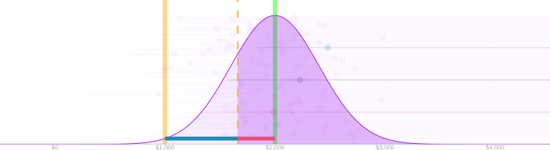
- If you want to report a confidence interval, you need to be able to calculate a standard error.
- And if you want to think about what your intervals are going to tell you—about power—you need the same thing.
- Remember, \inpollc{1.65} + \inpollb{0.84} \approx 2.5 standard errors when you’re using a one-sided interval.
- In the Georgia poll, we had a formula for the standard error.
- In this case, it’s a different thing, and we don’t have a formula.
- So what is the standard error here? We haven’t learned how to calculate that yet.
- Let’s do our usual thing: work with some fake data that feels plausible, and simulate.
What Might Have Happened?
- How might the NSW people have wound up with an underpowered study?
- Let’s use our imagination.
- This probably isn’t what really happened.
- Suppose they sized their study the way we would if we didn’t know how to do the calculation.
- Make up a plausible population and simulate.
- How could they have gone wrong?
Exercise: CausalDoku Again
\begin{array}{ccc||c|c} j & w_j & y_j(w_j) & \ingroupb{y_j(1)} & \ingroupa{y_j(0)} \\ \hline\hline 1 & 1 & 4 & \ingroupb{4} & ? \\ 2 & 1 & 3 & \ingroupb{3} & ? \\ 3 & 1 & 2 & \ingroupb{2} & ? \\ \hline 4 & 0 & 3 & ? & \ingroupa{3} \\ 5 & 0 & 2 & ? & \ingroupa{2} \\ 6 & 0 & 1 & ? & \ingroupa{1} \\ \hline\hline \end{array}
- The code box is the table, one row per person. The ? cells are the ones wrapped in
c. For counterfactual1- Right now they hold Thursday’s constant-effect completion. It’s constant.
- Q. What happens when we change treatment, like we did last time, so we get a mix of signs? Treatment gets more variable? Does our estimator get more variable or less variable? Or is its variability the same? Or does it depend on how specifically you permute stuff?
- Vote first. Then permute the three counterfactuals in each column, click Run Code, and see.
- It randomizes our six people 10,000 times and plots the estimate.
causaldoku.table = function(...) {
cells = matrix(c(...), ncol = 4, byrow = TRUE)
tiny.population(Y1 = cells[, 3], Y0 = cells[, 4])
}
estimate = function(realized) {
mean(realized$Yw[realized$W == 1]) - mean(realized$Yw[realized$W == 0])
}
draw.estimate = function(pop) {
realized = pop
realized$W = sample(1:6) <= 3
realized$Yw = ifelse(realized$W == 1, pop$Y1, pop$Y0)
estimate(realized)
}
causaldoku.plots = function(pop, effect.samples) {
print(potential.outcome.plot(pop))
print(ggplot() + geom_bar(aes(x=round(effect.samples, 12), y=after_stat(prop)),
width=.3, alpha=.3) +
geom_point(aes(x=effect.samples, y=grid_along(effect.samples)),
position=position_jitter(w=.12, h=0), color='purple', alpha=.1) +
with_annotations(effect.samples, estimand=mean(pop$Y1 - pop$Y0), dots=0) +
coord_cartesian(xlim=c(-.5, 2.5), ylim=c(0, 1.05)) + labs(x=NULL, y=NULL))
}Solution
- Three completions of Thursday’s game. Same average effect, different spreads.
- Almost certainly that isn’t what happened to NSW; what happened was probably about money.
- But sometimes you say something to make a point.
- So why does the behavior of our simulation depend on how we fill in the stuff we can’t see?
- Let’s look into it. This is what theory is for.
Doing the Calculation
Squaring the Error
- \hat\tau’s error is the difference of two errors. \hat\tau-\bar\tau \explain{=}{Subtract the control group's error from the treatment group's error.} \{\ingroupb{\hat\mu(1)}-\ingroupb{\mu(1)}\}-\{\ingroupa{\hat\mu(0)}-\ingroupa{\mu(0)}\}\\
- Since \mathbb{E}[\hat\tau] = \bar\tau, the variance is the expected squared error.
- Squaring the error gives two squared terms and a cross term. \operatorname{Var}(\hat\tau) \explain{=}{Square the difference: the two squares minus twice their product.} \mathbb{E}\bigl[\{\ingroupb{\hat\mu(1)}-\ingroupb{\mu(1)}\}^2\bigr] +\mathbb{E}\bigl[\{\ingroupa{\hat\mu(0)}-\ingroupa{\mu(0)}\}^2\bigr]\\ \quad -2\mathbb{E}\bigl[\{\ingroupb{\hat\mu(1)}-\ingroupb{\mu(1)}\}\{\ingroupa{\hat\mu(0)}-\ingroupa{\mu(0)}\}\bigr]\\
- The squared terms are Homework 4’s without-replacement variances. \begin{aligned} \mathbb{E}\bigl[\{\hat\mu(w)-\mu(w)\}^2\bigr] &\explain{=}{Each group is a simple random sample without replacement.} \frac{\sigma^2(w)}{m_w}\frac{m-m_w}{m-1} \qquad\text{where}\qquad \sigma^2(w) \explain{=}{Average the squared deviations across all m people.} \frac1m\sum_{j=1}^m\{y_j(w)-\mu(w)\}^2. \end{aligned}
- What’s left is the cross term.
Centering
- The centered outcomes in a column average to zero. \frac1m\sum_{j=1}^m z_j(w) = \frac1m\sum_{j=1}^m y_j(w) - \mu(w) = \mu(w) - \mu(w) = 0 \qquad\text{where}\qquad z_j(w) = y_j(w) - \mu(w).
- The difference of one person’s centered outcomes is their centered individual effect. \textcolor{#1b9e77}{z_j(1)-z_j(0)} = \{y_j(1)-y_j(0)\}-\{\mu(1)-\mu(0)\} \explain{=}{The difference of the column means is the average of the individual effects.} \textcolor{#1b9e77}{\tau_j-\bar\tau}.
- So the variance of the individual effects is the two column variances minus twice the average cross product. \begin{aligned} \textcolor{#1b9e77}{\sigma^2(\tau)} &\explain{=}{The variance of the individual effects is their average squared deviation from the average effect.} \frac1m\sum_{j=1}^m(\tau_j-\bar\tau)^2\\ &\explain{=}{Use the centered individual effect.} \frac1m\sum_{j=1}^m\{z_j(1)-z_j(0)\}^2\\ &\explain{=}{Square the difference.} \frac1m\sum_{j=1}^m z_j(1)^2+\frac1m\sum_{j=1}^m z_j(0)^2-\frac2m\sum_{j=1}^m z_j(1)z_j(0)\\ &\explain{=}{Each average squared centered outcome is a column variance.} \textcolor{#1b9e77}{\sigma^2(1)+\sigma^2(0)-\frac2m\sum_{j=1}^m z_j(1)z_j(0)}. \end{aligned}
- A group’s error is the average of its members’ centered outcomes. \hat\mu(w) - \mu(w) \explain{=}{Subtracting μ(w) from an average of the group's outcomes subtracts it from each one.} \frac{1}{m_w}\sum_{j=1}^m \{y_j(w)-\mu(w)\}\,1_{=w}(W_j) = \frac{1}{m_w}\sum_{j=1}^m z_j(w)\,1_{=w}(W_j).
Products of Indicators
- Multiplying the two errors gives products of indicators.
- When j = k, nobody is in both groups, so the product is 0.
- When j \ne k, Homework 4’s table gives the values and probabilities.
| 1_{=1}(W_j) | 1_{=0}(W_k) | \textcolor{#7b2cbf}{1_{=1}(W_j)1_{=0}(W_k)} | Probability |
|---|---|---|---|
| 1 | 1 | \textcolor{#7b2cbf}{1} | \frac{m_1}{m}\frac{m_0}{m-1}\explain{=}{j is treated; all m₀ control places remain for k.}\frac{m_1 m_0}{m(m-1)} |
| 0 | 0 | 0 | \frac{m_0}{m}\frac{m_1}{m-1}\explain{=}{The same, with the groups reversed.}\frac{m_0 m_1}{m(m-1)} |
| 1 | 0 | 0 | \frac{m_1}{m}\frac{m_1-1}{m-1}\explain{=}{j is treated; k has m₁ − 1 treatment places among m − 1 places left.}\frac{m_1(m_1-1)}{m(m-1)} |
| 0 | 1 | 0 | \frac{m_0}{m}\frac{m_0-1}{m-1}\explain{=}{The same, with the groups reversed.}\frac{m_0(m_0-1)}{m(m-1)} |
- Each probability multiplies j’s chance by k’s chance among the m-1 places left.
- The product \textcolor{#7b2cbf}{1_{=1}(W_j)1_{=0}(W_k)} is an indicator for a row, so its expectation is that row’s probability. \mathbb{E}[\textcolor{#7b2cbf}{1_{=1}(W_j)1_{=0}(W_k)}] = \begin{cases} 0 & j=k \\ \dfrac{m_1m_0}{m(m-1)} & j\ne k \end{cases}
Multiplying Sums
\left\{\sum_{j=1}^m a_j\right\}\left\{\sum_{k=1}^m b_k\right\} = \sum_{j=1}^m \sum_{k=1}^m a_j b_k
- This is a generalization of the identity (a+b)^2 = a^2 + 2ab + b^2 to more terms and two different sums.
- You may be so used to that you don’t even think about what’s really happening.
- Here’s a version where I’m very explicit: it’s a product of two copies of (a+b): one pink and one teal.
(a+b)^2 = \inpink{(a+b)}\textcolor{#118AB2}{(a+b)} = \inpink{a}\textcolor{#118AB2}{a} + \inpink{a}\textcolor{#118AB2}{b} + \inpink{b}\textcolor{#118AB2}{a} + \inpink{b}\textcolor{#118AB2}{b} = a^2 + 2ab + b^2
- Q. How do we generalize this to two different sums? We’ll use the same color-coded-copies trick.
- It helps to count out the terms in our pink copy using j and in our teal copy using k.2
- When we multiply out our sums, we get a product term for each pair of terms in the two sums.
- Each product term involves one term in the pink sum and one term in the teal one.
\left\{\sum_{j=1}^m a_j\right\}\left\{\sum_{k=1}^m b_k\right\} = \inpink{\sum_{j=1}^m a_j} \textcolor{#118AB2}{\sum_{k=1}^m b_k} = \inpink{\sum_{j=1}^m} \textcolor{#118AB2}{\sum_{k=1}^m} \inpink{a_j} \textcolor{#118AB2}{b_k}
The Cross Term
- We use centering, the expected products of indicators and the product-of-sums identity.
- Substitute the indicator sums into the cross term, multiply the sums, and take expectations. \begin{aligned} \mathbb{E}\bigl[\{\hat\mu(1)-\mu(1)\}\{\hat\mu(0)-\mu(0)\}\bigr] &\explain{=}{Write each error as a sum over everyone, multiply the two sums, and take the expectation of each term.} \frac1{m_1m_0}\sum_{j=1}^m\sum_{k=1}^m z_j(1)z_k(0)\, \mathbb{E}[\textcolor{#7b2cbf}{1_{=1}(W_j)1_{=0}(W_k)}]\\ &\explain{=}{Use the expected indicator products from the table.} \frac1{m_1m_0}\sum_{j=1}^m\sum_{k=1}^m z_j(1)z_k(0) \begin{cases} 0 & j=k \\ \dfrac{m_1m_0}{m(m-1)} & j\ne k \end{cases}\\ &\explain{=}{The terms with j = k are zero.} \frac1{m_1m_0}\sum_{j=1}^m z_j(1)\sum_{k\ne j}z_k(0)\,\frac{m_1m_0}{m(m-1)}\\ &\explain{=}{Cancel m₁m₀.} \frac1{m(m-1)}\sum_{j=1}^m z_j(1)\sum_{k\ne j}z_k(0)\\ &\explain{=}{The sum over everyone except j is the full sum with j's term removed.} \frac1{m(m-1)}\sum_{j=1}^m z_j(1)\left\{\sum_{k=1}^m z_k(0)-z_j(0)\right\}\\ &\explain{=}{The centered outcomes in a column average to zero, so the full sum drops out.} -\frac1{m(m-1)}\sum_{j=1}^m z_j(1)z_j(0). \end{aligned}
Assembly
- The variance is the three terms from Squaring the Error.
- The two squared terms are Homework 4’s variances.
- The third is the cross term.
- The strategy is to borrow what we need from the squared terms to complete the square.
- The cross term needs \sigma^2(1)+\sigma^2(0) beside it to make the variance of the individual effects.
- Each squared term can lend its share, because \frac{m-m_w}{m-1} = \frac{m}{m-1}-\frac{m_w}{m-1}. \begin{aligned} \operatorname{Var}(\hat\tau) &= \mathbb{E}\bigl[\{\ingroupb{\hat\mu(1)}-\ingroupb{\mu(1)}\}^2\bigr] +\mathbb{E}\bigl[\{\ingroupa{\hat\mu(0)}-\ingroupa{\mu(0)}\}^2\bigr] -2\,\mathbb{E}\bigl[\{\ingroupb{\hat\mu(1)}-\ingroupb{\mu(1)}\}\{\ingroupa{\hat\mu(0)}-\ingroupa{\mu(0)}\}\bigr]\\ &\explain{=}{Each squared term is a without-replacement variance, and the cross term is the one we just calculated.} \frac{\ingroupb{\sigma^2(1)}}{m_1}\frac{m-m_1}{m-1} +\frac{\ingroupa{\sigma^2(0)}}{m_0}\frac{m-m_0}{m-1} +\frac{2}{m(m-1)}\sum_{j=1}^m z_j(1)z_j(0)\\ &\explain{=}{Split (m − m₁)/(m − 1) into m/(m − 1) minus m₁/(m − 1), and likewise for m₀.} \left\{\frac{m\ingroupb{\sigma^2(1)}}{m_1(m-1)}-\textcolor{#1b9e77}{\frac{\sigma^2(1)}{m-1}}\right\} +\left\{\frac{m\ingroupa{\sigma^2(0)}}{m_0(m-1)}-\textcolor{#1b9e77}{\frac{\sigma^2(0)}{m-1}}\right\} +\textcolor{#1b9e77}{\frac{2}{m(m-1)}\sum_{j=1}^m z_j(1)z_j(0)}\\ &\explain{=}{Collect what we keep, and put what we borrowed with the cross term.} \frac{m}{m-1}\left\{\frac{\ingroupb{\sigma^2(1)}}{m_1}+\frac{\ingroupa{\sigma^2(0)}}{m_0}\right\} -\frac{1}{m-1}\textcolor{#1b9e77}{\left\{\sigma^2(1)+\sigma^2(0)-\frac2m\sum_{j=1}^m z_j(1)z_j(0)\right\}}\\ &\explain{=}{The borrowed pieces and the cross term are the variance of the individual effects.} \frac{m}{m-1}\left\{\frac{\ingroupb{\sigma^2(1)}}{m_1}+\frac{\ingroupa{\sigma^2(0)}}{m_0}\right\}-\frac{\textcolor{#1b9e77}{\sigma^2(\tau)}}{m-1}\\ &\explain{=}{Factor m/(m − 1) from the last term as well.} \frac{m}{m-1}\left\{ \frac{\ingroupb{\sigma^2(1)}}{m_1}+\frac{\ingroupa{\sigma^2(0)}}{m_0} -\frac{\textcolor{#1b9e77}{\sigma^2(\tau)}}m\right\}. \end{aligned}
A Conservative Standard Error
Three populations with the same observed data, and their randomization distributions.
The variance of \hat\tau decreases as the variance of the treatment effect increases.
\operatorname{Var}(\hat\tau) = \frac{m}{m-1}\left\{\frac{\ingroupb{\sigma^2(1)}}{m_1}+\frac{\ingroupa{\sigma^2(0)}}{m_0}-\frac{\textcolor{#1b9e77}{\sigma^2(\tau)}}{m}\right\}
Q. What do we do about it?
- A. The data can’t tell these three apart, so we use the widest spread the data allow. \begin{aligned} \operatorname{Var}(\hat\tau) &\le \frac{m}{m-1}\left\{\frac{\ingroupb{\sigma^2(1)}}{m_1}+\frac{\ingroupa{\sigma^2(0)}}{m_0}\right\}\\ \text{so}\quad \widehat{\operatorname{Var}}(\hat\tau) &= \frac{m}{m-1}\left\{\frac{\ingroupb{\hat\sigma^2(1)}}{m_1}+\frac{\ingroupa{\hat\sigma^2(0)}}{m_0}\right\} \quad\text{satisfies}\quad \operatorname{Var}(\hat\tau) \le \widehat{\operatorname{Var}}(\hat\tau)\text{ish}. \end{aligned}
- It’s exactly right when the effect is constant, as on the left.
Interpretation and Communication
Making the Case
- Four people. Each person’s two potential outcomes sum to the same number.
- Q. What happens to the arrow if we trade one treated person for one control?
- A. Nothing. A trade moves both group means by the same amount.
- The treated group trades one treated outcome for another.
- The control group trades the same two people’s control outcomes.
- Every pair sums to the same number, so the two trades are the same size.
- Every randomization is a few trades from this one, so the estimate is the same in all of them.
Footnotes
Ok, counterfactual is what we mean by it but not what R does. It’s a coincidence. c( a,b,…) concatenates the vectors you pass in into one vector and concatenating one scalar—a length one vector—and nothing else gives you that scalar back.
If we used j to count terms in both sums, we’d wind up with two different things we call j: one pink and one teal. We could get by saying ‘pink j’ and ‘teal j’ in class, but people you meet later on would probably get confused if you talk this way. Using j and k is conventional.